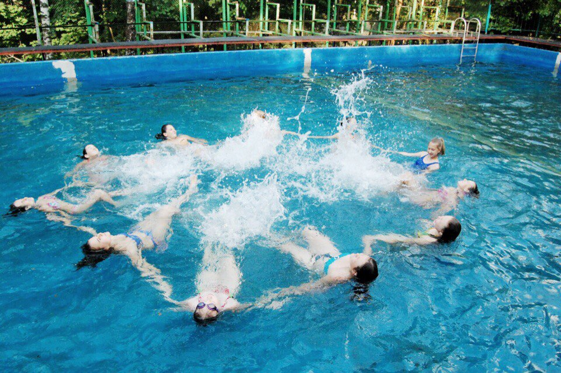
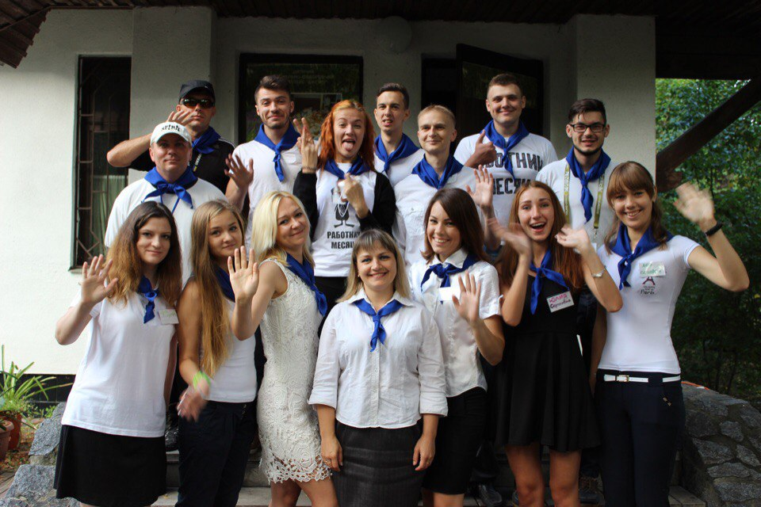
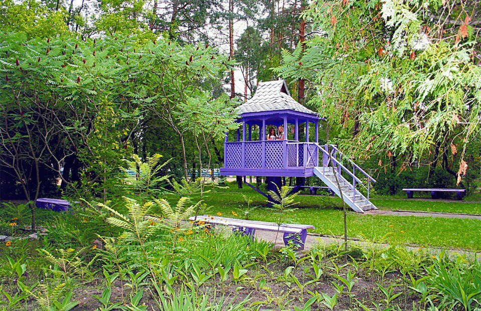
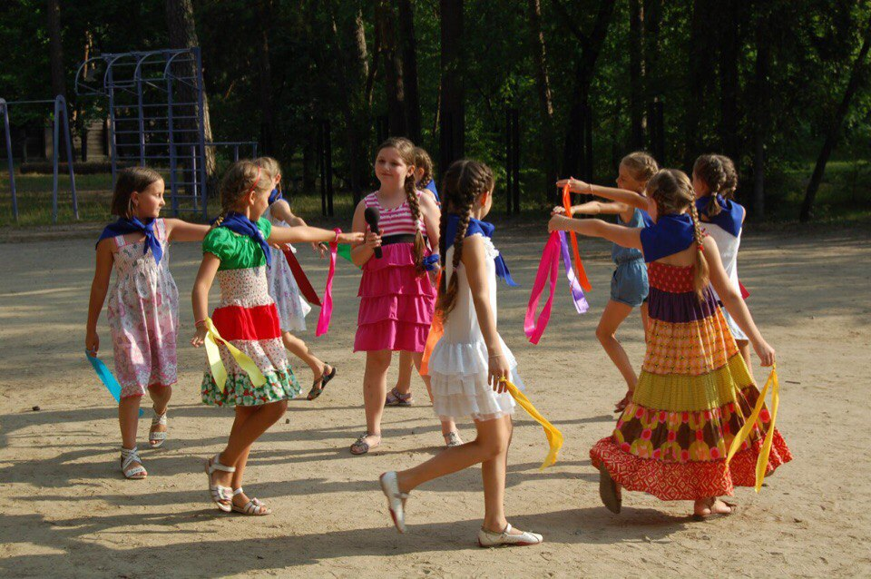
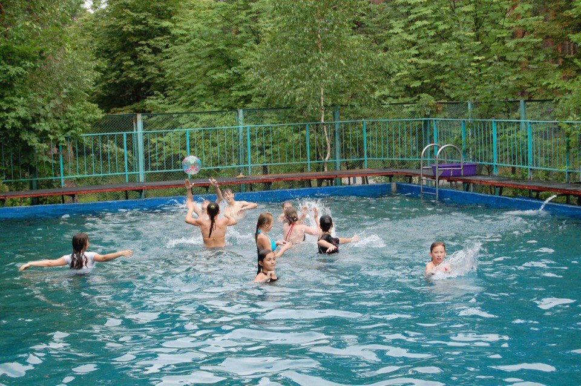

Про нас



Дитячий оздоровчий центр « Дніпро» розташований у районі Конча - Заспа неподалік від смт. Козин. Ми знаходимось в екологічно чистій зоні, у лісовій місцевості.
Наша ціль – зробити відпочинок Вашої дитини цікавим, веселим, а головне – корисним. У дітей є можливість відвідувати кисневі терапії, масажний кабінет та заняття ЛФК .
Нашим юним відпочиваючим завжди є чим зайнятися : спортивні заняття різних видів, мистецтво, гуртки іноземної мови, конкурси, квести та багато – багато інших захоплюючих речей.
Основою кожного відпочинку є , звісно, харчування, про яке турбуються наші неперевершені кухарі – майстри своєї справи.
Але головним є те, що Ваша дитина буде в оточенні прекрасних педагогів та волонтерів протягом усього відпочинку! Ми завжди раді вітати Вас і Ваших дітлахів у нас у «Дніпрі»;)

Графік заїздів
- І зміна : 13.06.2017 – 26.06.2017
- ІІ зміна : 28.06.2017 – 11.07.2017
- ІІІ зміна : 13.07.2017 – 26.07.2017
- ІV зміна : 28.07.2017 – 10.08.2017
- V зміна : 11.08.2017 – 24.08.2017

Умови відпочинку

Розташований Дитячий оздоровчий центр «Дніпро» в лісовому масиві, поза межами великого населеного пункту в смт. Козин, Обухівського району, Київської області. Екологічно чиста зона створює умови для відпочинку та оздоровлення.
Територія закладу займає 5,48 га. Територія ДП ДОЦ «Дніпро» озеленена, огороджена та охороняється цілодобово.
Житловий фонд ДП ДОЦ «Дніпро» нараховує 383 ліжко – місць : з них 323 ліжко-місця в 6 стаціонарних корпусах для відпочиваючих та 60 ліжко – місць в будинках «Шалє» для персоналу. Корпуси з централізованим опаленням, цілодобове водопостачання холодної та гарячої води. Діти розміщуються в двомісних – шестимісних номерах. Кожен номер забезпечений достатньою кількістю якісних меблів (ліжка з ортопедичними матрацами, індивідуальні тумбочки, шафа та сушка для одягу). Санітарні кімнати знаходяться на поверсі. Кожна вбиральня забезпечена засобами гігієни. У холі корпусу розташований зал відпочинку та дозвілля, обладнаний м’якими меблями. У холі є кулер з питною водою.
Прибирання корпусів щоденне, зміна постільної білизни кожні сім днів.
Меню оздоровчого центру
Дитячий оздоровчий центр пропонує для Вашої дитини 5 – ти разове збалансоване меню. Також є можливість замовлення дієтичного харчування. У склад меню входять (як приклад):

Культурне життя табору
Дитячий оздоровчий центр «Дніпро» є не тільки оздоровчим, а ще й цікавим та веселим місцем відпочинку для Вашої дитини. Кожен день наповнений різними культурними заходами : танцювальні та співочі гуртки, «Арт хатина», конкурсні та концертні підготовки, гуртки іноземних мов, цікаві квести, східні єдиноборства , пілатес, йога, гандбол, цирк, кінотеатр та най-найулюбленіше місце дітей – вечірня дискотека! Тому Ваша дитина точно не буде сумувати;)



Лікувально-профілактичні заходи




На території ДОЦ «Дніпро» розташований 20-метровий басейн, де проводяться навчальні тренування та змагання. Також усі діти проходять курс кисневої терапії та курс соляної печери. Є можливість відвідувати сеанси лікувального та профілактичного масажу і ЛФК.